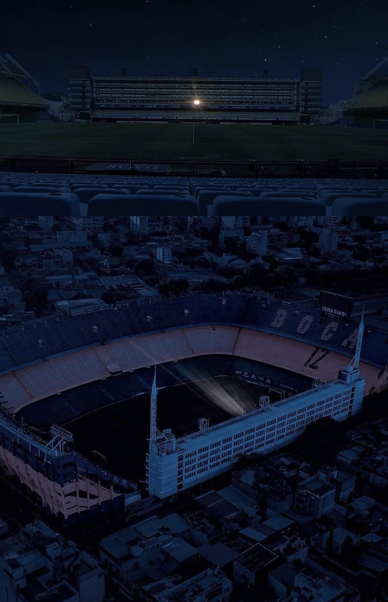
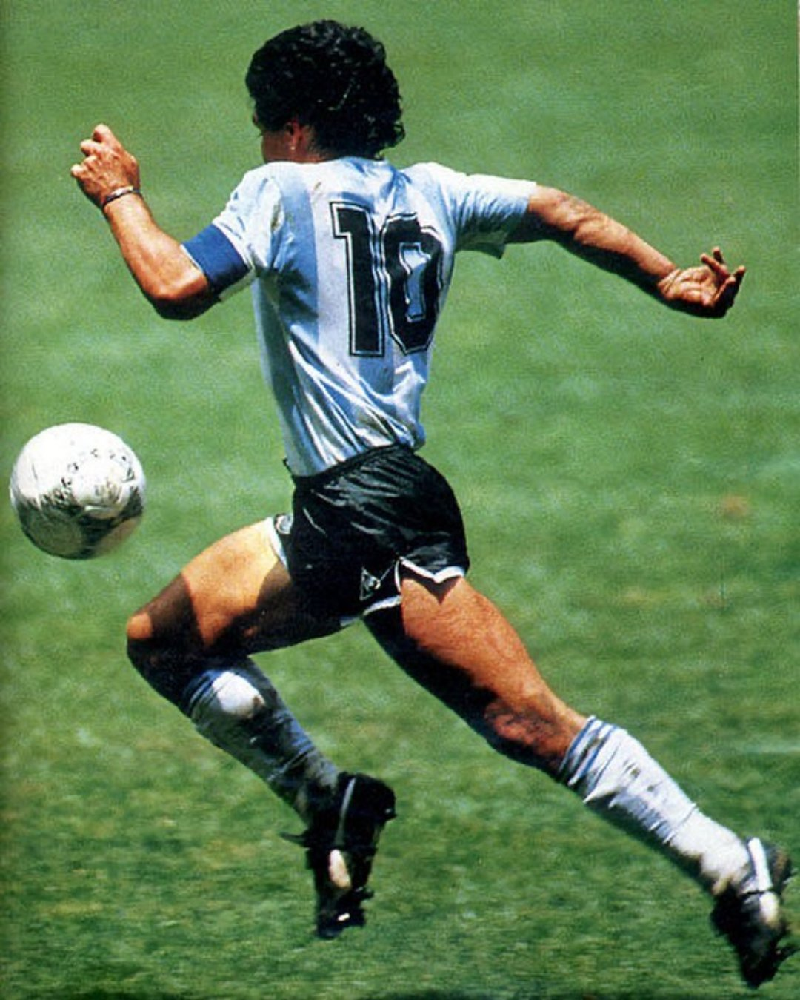

• 大杂烩
马拉多纳去世
忽然看到消息，马拉多纳因心脏骤停于家中去世，享年60岁。
他的去世并不令人意外吧，之前有过多次差点去世的经历。
以他的生活方式而言，能够活到60已经是个奇迹了。
老马一辈子不服贝利，最后却先走一步，毒品真是不能碰啊。
小时候也崇拜过老马一段时间，印象最深刻的反倒不是86年世界杯，一个是因为年纪小，二是当时没有直播。
90年世界杯妙传风之子击败死敌巴西，是第二天听说的，第一次感受到足球以弱胜强的神奇。
94年对希腊的进球很美妙，可惜后来查出服用禁药的结局不美妙。
他是阿根廷人的民族英雄，那不勒斯人和博卡青年球迷心中的上帝，而上帝之手有悖体育精神。
英格兰和巴西人对他又恨又爱，他在踢球之外几乎一无是处，虽有赤子之心却什么都可以搞砸，不自量力的出山执教还毁了在他之后最有希望的一届国家队——但人们就是崇拜他，热爱他，称他为球王。
看过他踢球的人都承认，他就是为足球而生，不仅是身体和技术，更因为他展现传达的精神意志能够影响场内场外所有人。
博卡青年的主场关闭所有灯光，仅保留马拉多纳生前专属房间的灯光。
所有纪念活动的图片中，这张看着最有感觉。

齐达内挑了经典的这张来纪念。
